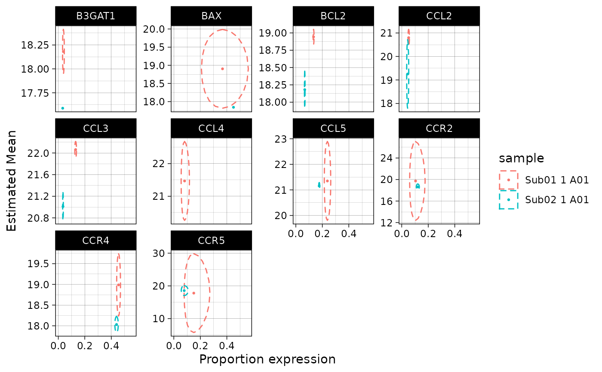

If there are no positive observations for a contrast, it is generally not estimible. However, for the purposes of testing we can replace it with the least favorable value with respect to the contrasts that are defined.
impute(object, groupby)Output of predict
Variables (column names in predict) to group by for imputation (facets of the plot)
data.table
##See stat_ell
example(stat_ell)
#>
#> stt_ll> data(vbetaFA)
#>
#> stt_ll> library(ggplot2)
#>
#> stt_ll> zlmCond <- zlm(~Stim.Condition, vbetaFA[1:10,])
#>
#> Done!
#>
#> stt_ll> MM <- model.matrix(~Stim.Condition,unique(colData(vbetaFA)[,c("Stim.Condition"),drop=FALSE]))
#>
#> stt_ll> predicted <- predict(zlmCond,modelmatrix=MM)
#>
#> stt_ll> plt <- ggplot(predicted)+aes(x=invlogit(etaD),y=muC,xse=seD,yse=seC,col=sample)+
#> stt_ll+ facet_wrap(~primerid,scales="free_y")+theme_linedraw()+
#> stt_ll+ geom_point(size=0.5)+scale_x_continuous("Proportion expression")+
#> stt_ll+ scale_y_continuous("Estimated Mean")+
#> stt_ll+ stat_ell(aes(x=etaD,y=muC),level=0.95, invert='x')
#>
#> stt_ll> ## plot with inverse logit transformed x-axis
#> stt_ll> print(plt)
#> Warning: Removed 3 rows containing non-finite values (stat_ell).
#> Warning: Removed 1 rows containing missing values (geom_point).
#>
#> stt_ll> # doesn't do anything in this case because there are no inestimable coefficients
#> stt_ll> predictI <- impute(predicted, groupby='primerid')
#> Warning: no non-missing arguments to max; returning -Inf
